Seguridad HazMat
Protocolos HazMat, maniobras certificadas y capacitación continua para materiales peligrosos.
Transporte y manejo de líquidos a granel y químicos con seguridad total: traslados puerto–planta, patios autorizados, heating, cleaning y pruebas de integridad.
Protocolos HazMat, maniobras certificadas y capacitación continua para materiales peligrosos.
Conexiones en puertos clave: Manzanillo, Lázaro Cárdenas, Veracruz y Altamira. Coordinación 24/7.
Red de patios con servicio de calentamiento, limpieza y pruebas para entrega en especificación.
Resguardo seguro, maniobras especializadas y monitoreo en tiempo real de la operación.
Chasises portatanque y tractos configurados para cargas peligrosas y sobre-especificación.
Trazabilidad, control documental y aseguramiento de calidad para auditorías y normativas.
Coordinación de arribo, liberación y pick-up de isotanques. Control documental, inspecciones y programación de salida hacia patios externos o planta según la ventana operativa.
• Puertos: Manzanillo, Lázaro Cárdenas, Veracruz, Altamira.
• Trazabilidad y avisos en tiempo real 24/7.
Resguardo y servicios: heating, cleaning, pruebas de estanqueidad e integridad, así como maniobras especializadas y conexión a tierra en descarga.
• Programación por turnos y cumplimiento HazMat.
• Control de temperatura y liberación QA.
Entrega en especificación mediante chasis porta-isotanques y tractos dedicados. Conexión segura, descarga y retorno, con documentación y cierre de viaje.
• Reporte de cierre, sellos y evidencias.
• Plan de retorno o reposicionamiento.
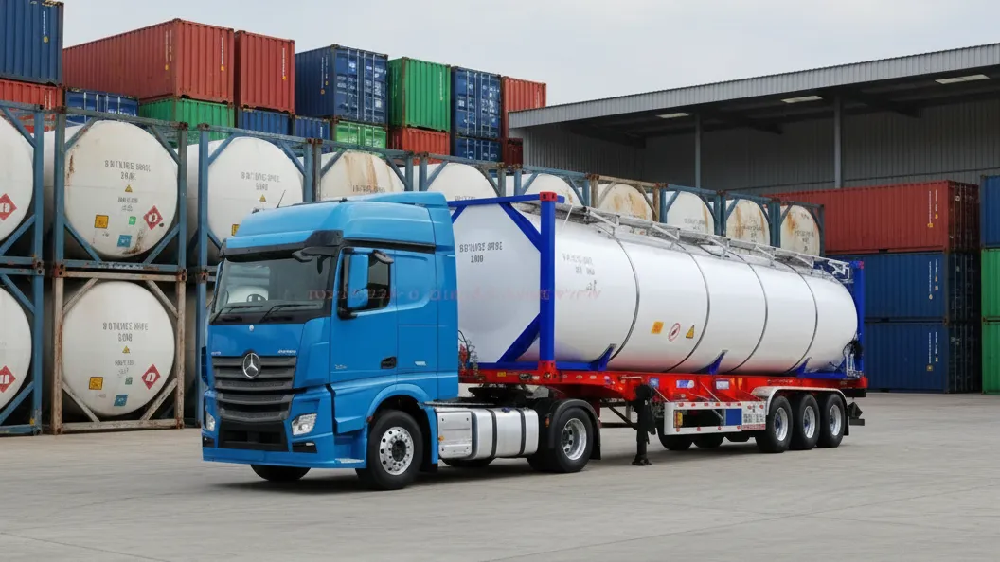
21–26 m³, presión 4 bar. Químicos a granel no extremadamente corrosivos. Opciones con serpentín de heating y válvulas top/bottom.
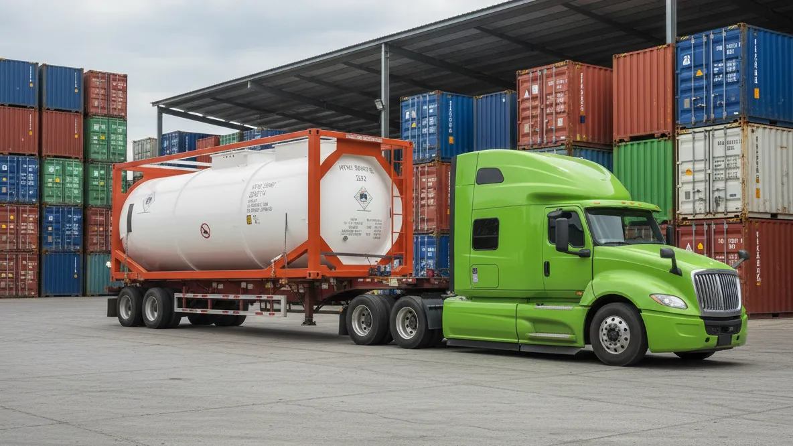
21–25 m³, presión 4–6 bar. Para corrosivos/ tóxicos con mayores requisitos de seguridad y válvulas reforzadas.
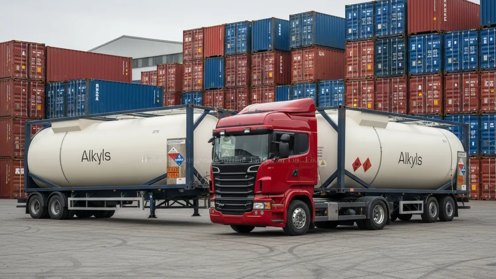
19–24 m³, presión 6–8 bar. Diseñados para mayor presión y compatibilidad con productos agresivos.
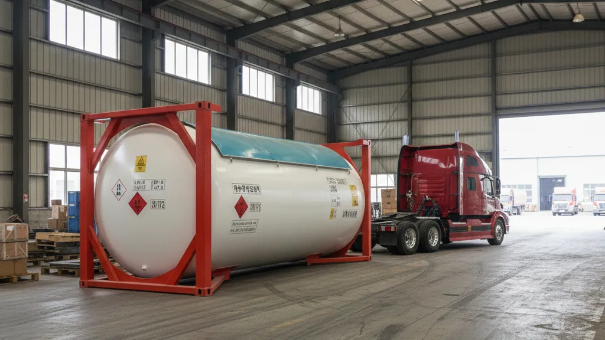
Para LPG, amoníaco, butadieno, cloro (según configuración). Presión alta con dispositivos de alivio y válvulas de seguridad.
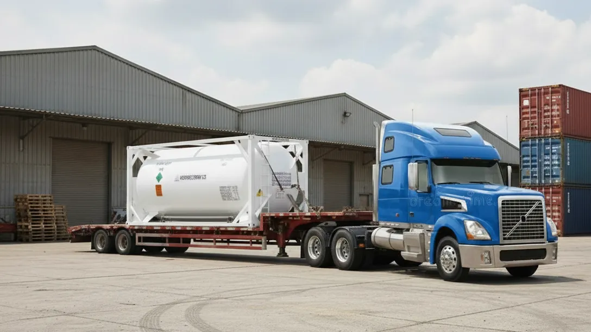
Doble pared y super-aislamiento para LIN, LOX, LCO₂, LNG, N₂O. Control de boil-off y válvulas criogénicas.
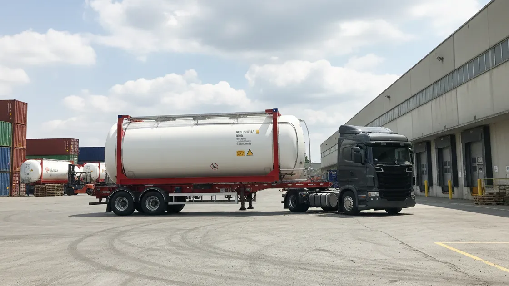
T11 con protocolos sanitarios, sellos y limpieza certificada para aceites, jarabes, alcoholes y food-grade.
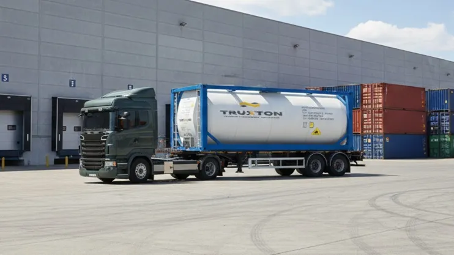
Epóxico o hule (rubber lined) para compatibilidad con químicos agresivos y protección anticorrosiva.
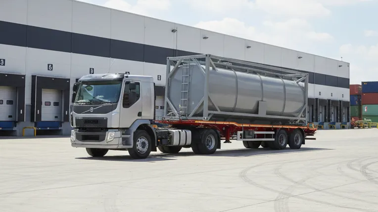
Con tabiques internos que reducen el movimiento del líquido para seguridad y estabilidad.
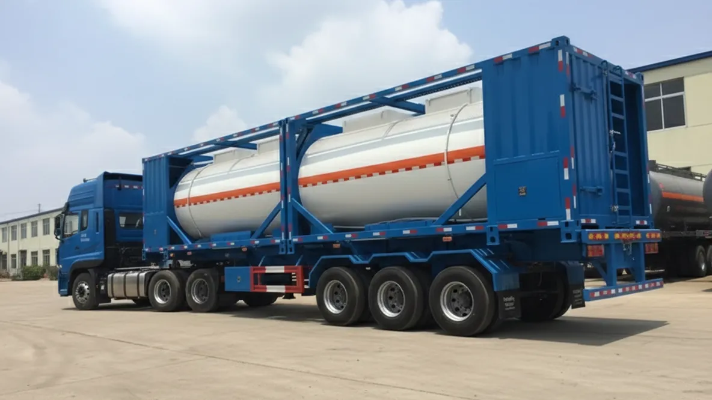
Mayor capacidad (principalmente Europa). Ideal para productos no peligrosos o de baja presión.
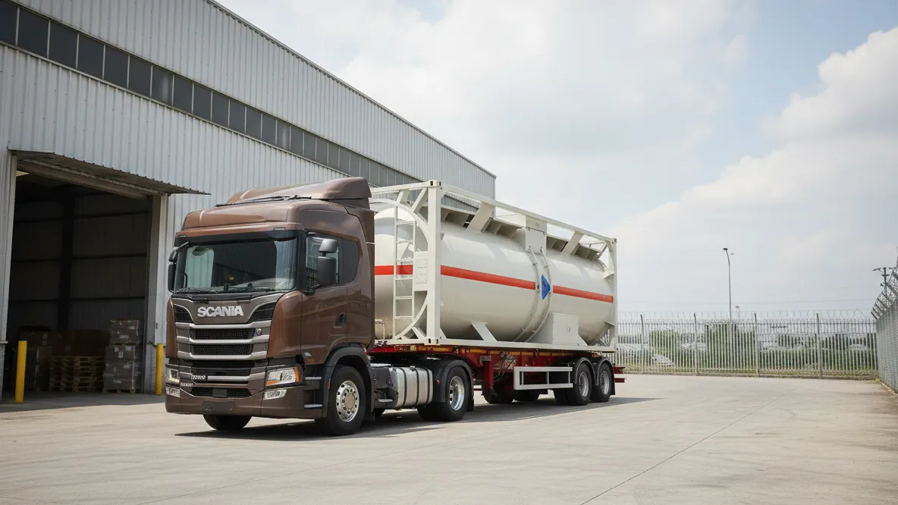
Sistemas de mantenimiento de temperatura (heating/refrigerado) para productos sensibles.
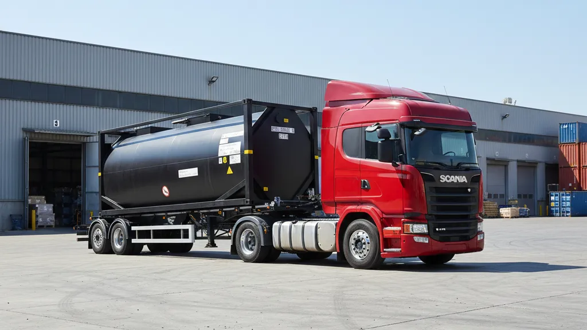
Tanques especiales con aislamiento y sistemas de calentamiento para asfalto y derivados.